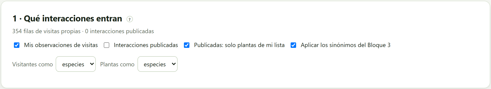
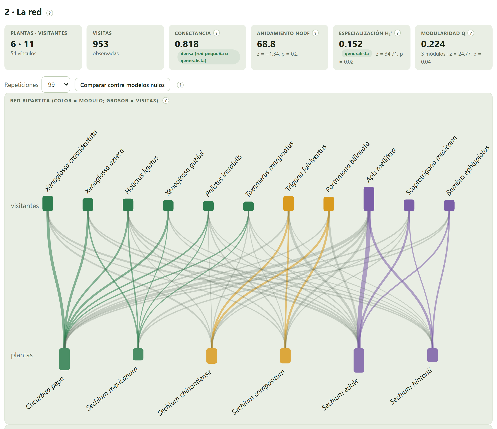
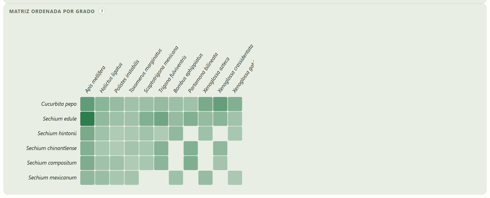
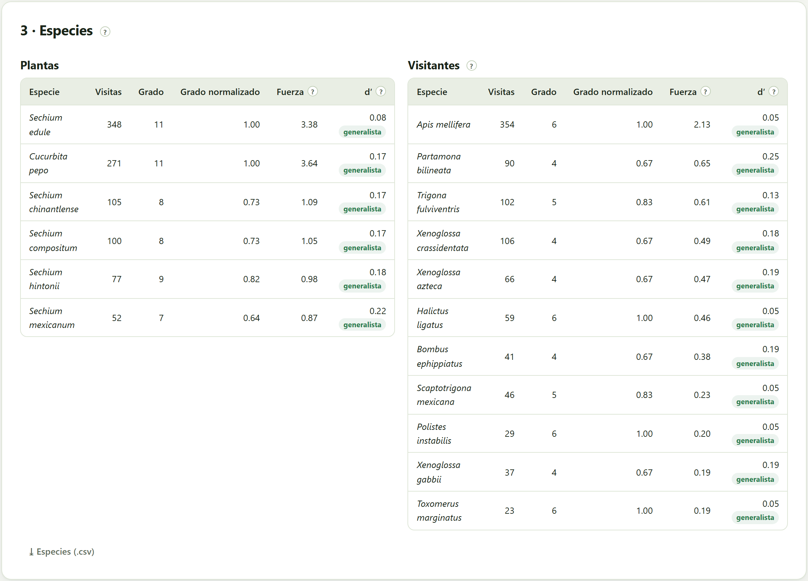
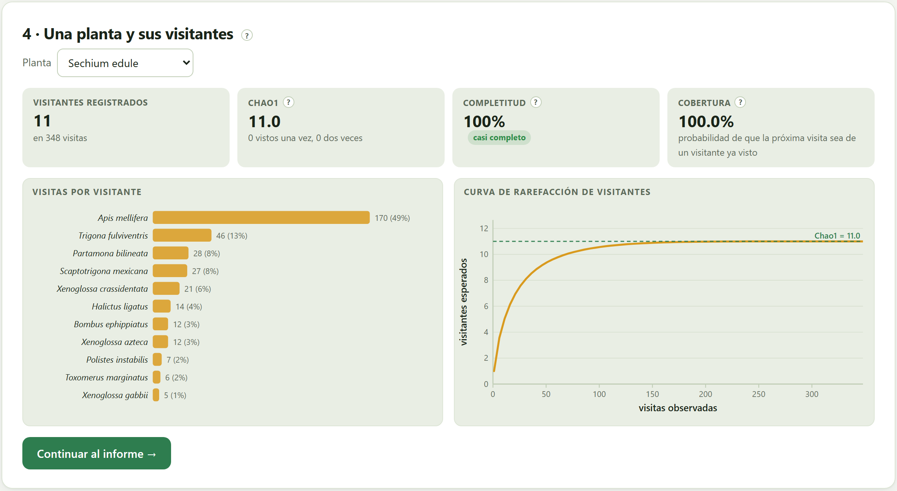

Aquí ya no se habla de coincidencias sino de visitas registradas: tus observaciones de campo y lo que otros publicaron. La red planta–visitante dice qué tan especializada es la relación —conectancia, anidamiento, especialización y módulos, contra modelos nulos—, qué visitantes son clave para cada planta y cuántos faltan por registrar.
Los Bloques 5 a 8 midieron oportunidad de interacción. Este bloque trabaja con el cuarto eslabón de la cadena de evidencia (sección 1.7): la visita a la flor. Una red de visitas es una matriz de plantas (filas) por visitantes (columnas) con el número de visitas observadas en cada casilla, o con un 1 cuando solo se sabe que el vínculo existe.
Las redes de polinización tienen una estructura característica: son anidadas —los especialistas visitan subconjuntos de las plantas que visitan los generalistas (Bascompte et al. 2003)—, más o menos modulares —grupos de plantas y visitantes que interactúan más entre sí— y tienen una especialización medible. Cada índice se compara con lo que daría una red al azar con los mismos totales: un número sin modelo nulo no dice si la estructura es notable.

| Control | Qué hace |
|---|---|
| Mis observaciones de visitas | Las visitas importadas en el Bloque 2, con sus conteos. |
| Interacciones publicadas | Los pares traídos de la base de interacciones; cada registro publicado cuenta como una visita. |
| Publicadas: solo plantas de mi lista | Deja fuera las plantas publicadas que no pertenecen a una entrada de tu lista (la base devuelve también las otras plantas que visitan tus visitantes). |
| Aplicar los sinónimos del Bloque 3 | Reescribe los nombres con las reglas de sinónimos: Peponapis crassidentata pasa a Xenoglossa crassidentata. |
| Visitantes como · Plantas como | Especies o géneros. Reunir por género ayuda cuando las fuentes identifican a distintos niveles. |
Con solo tus visitas, la red es cuantitativa: cada casilla es un número de visitas comparable. Al añadir las publicadas, cada registro publicado cuenta 1 y los números dejan de ser comparables: la app calcula entonces la estructura (conectancia, NODF, módulos) pero no H₂′ ni d′, que suponen conteos, y lo dice en su recuadro.

| Índice | Qué mide | En la práctica |
|---|---|---|
| Conectancia | Los vínculos observados entre los posibles (Jordano 1987). Las redes grandes suelen tener entre 0.15 y 0.4. | 0.818 · densa (red pequeña o generalista) |
| NODF | El anidamiento, de 0 a 100, por solapamiento y relleno decreciente de la matriz binaria (Almeida-Neto et al. 2008). | 68.8 · z = −1.34, p = 0.2 |
| H₂′ | La especialización de toda la red, de 0 (cada visitante reparte sus visitas como la oferta) a 1 (cada uno visita plantas exclusivas) (Blüthgen et al. 2006). | 0.152 · generalista · z = 34.71, p = 0.02 |
| Modularidad Q | Qué tan dividida está la red en grupos (Barber 2007), buscada con propagación de etiquetas y reinicios (Liu y Murata 2010; Beckett 2016). | 0.224 · 3 módulos · z = 24.77, p = 0.04 |
Los modelos nulos conservan los totales de cada planta y de cada visitante y reparten los vínculos al azar: el algoritmo curveball para la matriz binaria (Strona et al. 2014) y el reparto al azar de visitas individuales para la cuantitativa (equivalente al de Patefield 1981). El recuadro da el z —a cuántas desviaciones estándar está lo observado del promedio nulo— y una p de dos colas; la de la modularidad usa hasta 49 repeticiones porque cada una exige buscar módulos.
La red de práctica es pequeña y muy conectada (0.818): casi todos los visitantes llegan a casi todas las plantas. Su anidamiento (68.8) no es distinto del de una red al azar con los mismos totales (p = 0.2). Su especialización es baja en términos absolutos (H₂′ = 0.152, generalista), pero mucho mayor que la del azar (z = 34.7): los visitantes reparten sus visitas con preferencias, aunque débiles. Y tiene tres módulos: las abejas de la calabaza, con Halictus, Polistes y Toxomerus, junto a Cucurbita pepo y S. mexicanum; las abejas sin aguijón Trigona y Partamona con S. chinantlense y S. compositum; y la abeja melífera, Scaptotrigona y el abejorro con el chayote y S. hintonii.

| Si la red es pequeña (menos de 10 especies por lado) | entonces la conectancia será alta y el anidamiento poco informativo; reporta H₂′, los módulos y la completitud del muestreo antes que NODF. |
| Si un índice no difiere del modelo nulo | entonces la estructura que mide no es notable dados los totales: no la discutas como un rasgo de la red. |
| H₂′ < 0.3 · 0.3–0.6 · > 0.6 | generalista · intermedia · especializada. |

| Columna | Qué dice |
|---|---|
| Visitas · Grado | Cuántas visitas y con cuántas especies del otro lado interactúa. |
| Grado normalizado | El grado entre el número de especies del otro lado: 1 si interactúa con todas. |
| Fuerza | La suma de las dependencias de sus compañeros en ella (Bascompte et al. 2006): un visitante con fuerza alta es aquel del que dependen muchas plantas para una fracción grande de sus visitas. Es la medida de «visitante clave». |
| d′ | La especialización de cada especie frente a la disponibilidad de sus compañeros, de 0 a 1 (Blüthgen et al. 2006): generalista < 0.3, intermedia 0.3–0.6, especialista > 0.6. |
⤓ Especies (.csv) descarga las dos tablas. En la red de práctica ninguna especie pasa de d′ = 0.25; los más especializados son Partamona bilineata (0.25) y S. mexicanum (0.22).
La última tarjeta mira una planta a la vez: quiénes la visitan, en qué proporción y si el muestreo ya encontró a todos sus visitantes. Funciona aunque el estudio tenga una sola planta —en ese caso es la única lectura posible, porque con una planta no hay red que describir.

| Recuadro | Qué dice |
|---|---|
| Visitantes registrados | Cuántos visitantes distintos en cuántas visitas. |
| Chao1 | El número mínimo estimado de visitantes, a partir de cuántos se vieron una vez y cuántos dos (Chao 1987). |
| Completitud | Registrados entre Chao1: qué fracción de los visitantes ya se encontró (Chacoff et al. 2012). Muy incompleto < 50 %, incompleto 50–80 %, bueno 80–95 %, casi completo > 95 %. |
| Cobertura | La probabilidad de que la próxima visita sea de un visitante ya visto. |
| Si la completitud es menor de 80 % | entonces faltan visitantes por registrar: no afirmes que la planta tiene pocos visitantes ni que depende de uno; vuelve a campo o dilo en la discusión. |
| Si hay muchos visitantes vistos una sola vez | entonces Chao1 es inestable: es un mínimo del total, no el total. |
La completitud necesita conteos de visitas. Con interacciones publicadas solo se sabe si el vínculo existe, y la app lo dice en lugar de la curva.
| Mensaje | Qué significa y qué hacer |
|---|---|
| Hacen falta interacciones | Importa tus observaciones de visitas o busca las interacciones publicadas en el Bloque 2. |
| No hay interacciones con estas fuentes… | Las casillas elegidas dejan la red vacía. Marca otra fuente o quita el filtro de plantas de la lista. |
| Con una sola planta (o un solo visitante) no hay red que describir… | Se muestran los visitantes, sus proporciones y la completitud; los índices de red no aplican. |
| La completitud del muestreo necesita conteos de visitas… | Solo hay interacciones publicadas para esa planta. |
| H₂′: requiere conteos de visitas | La red mezcla fuentes o solo tiene publicadas (sección 9.2). |
| sin modelo nulo aún | Pulsa Comparar contra modelos nulos. |